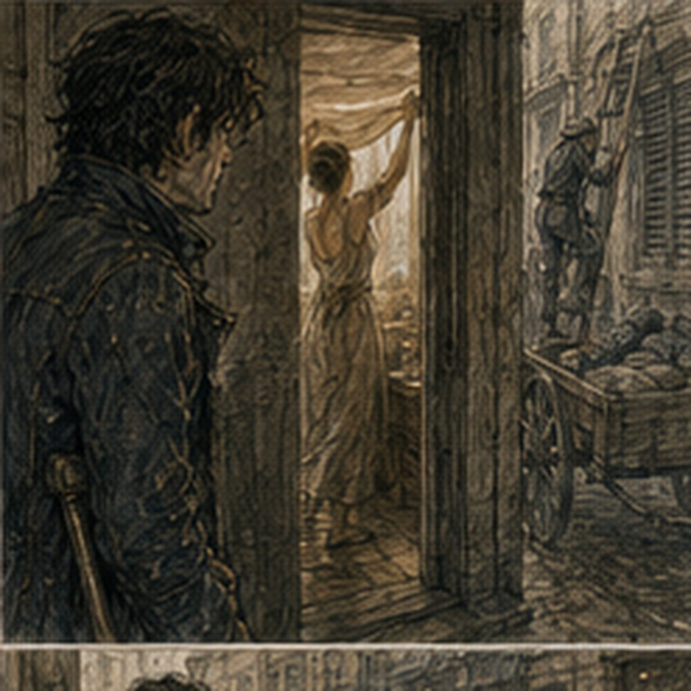

I woke because my right hand was numb. This was alarming for approximately one second. Then I discovered I had slept on it. Less alarming. I rolled onto my back and waited for sensation to return. Pins. Needles. Pain. Good. My shoulders remembered yesterday. My back remembered yesterday more. Carrying sacks used muscles fighting did not. Or used them differently. Old Greg had known this.
Old Greg had also employed porters. Knowledge became less impressive when somebody else had done the lifting. I flexed my hand. Blisters nearly gone. Ribs quiet. Channels quiet. No reason not to go to Bale. Several reasons not to go immediately. Breakfast first. Then Hessa. I had not been summoned. That mattered.
Hessa had said small utility casting, no repeated load testing. I had used two small Barriers during the spar, one producing mild pressure, then one coin-sized Barrier at the storehouse with no symptoms. I could decide I was fine. That would be efficient. I went to Hessa. Her door was open.
A woman I did not know stood inside holding a strip of cloth between both hands. Mid-thirties. Strong wrists. Work clothes. The cloth hung straight. Nothing happened. Hessa sat opposite her.
“Again.”
The woman breathed. The cloth moved. Barely. Not wind. One edge lifted and stayed. Three breaths. Dropped. The woman smiled. Hessa said, “Again.” I waited outside. No reason to interrupt. A cart passed. Someone across the street was repairing a shutter.
A boy carried six loaves stacked against his chest and lost the top one. He caught it against his chin. Good. Inside, the woman lifted the cloth again. Longer. Hessa stopped her. They talked quietly. I could not hear. I did not try. Eventually the woman came out. She saw me.
“Waiting?”
“Yes.”
“Long?”
“No.”
“Good.”
She left. Hessa looked at me.
“You weren’t scheduled.”
“I know.”
“Then?”
“Check.”
“For?”
“Progress.”
“That is vague.”
“Barrier symptoms.”
“Better.”
I sat. She checked eyes. Pulse. Hands.
“Work?”
“Five hours yesterday.”
“What kind?”
“Carrying.”
She looked at my shoulders.
“Yes.”
“One cast.”
“Size?”
“Coin.”
“Load?”
“Barrel.”
Her hand stopped.
“Explain.”
“Not stopping the barrel.”
“Explain better.”
“Half barrel rolling on a ramp. I placed the Barrier beside the hoop. Contact shifted it enough for a worker to clear his ankle. Barrier broke immediately.”
“Symptoms?”
“No.”
“After?”
“No.”
“Later?”
“No.”
She nodded.
“Show me.”
I looked around.
“No barrel.”
“Barrier.”
Right. Coin-sized. Three breaths. Clean. Release.
“Again.”
Same. Four breaths. Clean.
“Palm.”
I formed it. Low density. Three breaths. Pressure. One. Not pain. Release. Hessa waited.
“Pressure?”
“One.”
“Gone?”
“Almost.”
We waited. Gone.
“Again?”
I asked.
“No.”
Of course.
“What changed?”
“Nothing.”
“That is not true.”
“Nothing important.”
I frowned. She continued.
“Small cast remains clean. Larger sustained load still produces symptoms. Recovery is improving. Limit is still there.”
“So?”
“Small utility is fine. Palm-sized Barrier only when necessary, brief. No repeated palm work.”
“Necessary according to?”
“You.”
That was worse. I looked at her.
“You are giving me discretion.”
“Yes.”
“How much?”
“If you have time to ask whether it is necessary, probably don’t cast it.”
“That is not a measurement.”
“It is a rule.”
“Bad rule.”
“Useful rule.”
I considered arguing. Did not. She noticed.
“What?”
“Nothing.”
“You’re learning.”
“Do not ruin it.”
She almost smiled.
“Any fighting?”
“Not planned.”
“Any work?”
“Probably.”
“Any drinking?”
“Not planned.”
“That has never stopped you.”
“One time.”
“Enough.”
I stood.
“Come back when?”
“Three days if no symptoms. Earlier if symptoms.”
“Can I test coin-sized directional work?”
“No deliberate load testing.”
“That was not what I asked.”
“Yes, if the task itself is ordinary and the cast stays small.”
There. Not laboratory. Use. Observe. Do not manufacture danger to justify experiment. Good. I left.
Bale was still available. So was lunch. Too early. Bale won. The master was there. I knew because the clerk from yesterday saw me enter and immediately pointed toward the back.
“He’s here.”
That sounded accusatory.
“Good morning.”
“You ask too many questions.”
“Yes.”
A man emerged from behind a curtain carrying a wooden tray of gray pellets. Late forties. Round face. Clean apron. Three fingers on his left hand stained blue.
“Greg?”
“Yes.”
“I’m Holl.”
“Master?”
“Owner.”
Better.
“Your clerk said you might know about house testing.”
“My clerk said you bought one scoop and asked twelve questions.”
“Approximately.”
“Fourteen.”
Good clerk. Holl set the tray down.
“What are you making?”
“I still don’t know.”
“Then why are you here?”
“I want to understand how consistent treated kestrin gets made.”
“Made by whom?”
“Anyone.”
“Why?”
“Curiosity.”
He stared. Nessa would approve.
“Fine.”
That surprised me.
“Fine?”
“I like rocks.”
Good. We were doomed. Holl lifted one pellet.
“People talk about treatment too much.”
“Dorrin said sorting first.”
“Dorrin is right.”
“Pell too.”
“Pell owes Dorrin money.”
Everyone knew.
“How?”
“Stone people talk.”
Right. Holl pointed at the tray.
“This is basic bed grade. We buy treated stock, then reject.”
“How much?”
“Varies.”
“Typical.”
“Ten to twenty percent.”
That was large.
“For visible defects?”
“Some.”
“Reaction?”
“Some.”
“Then you rebatch.”
“Yes.”
There. Confirmed at least here.
“How?”
“Not complicated.”
He brought out three shallow trays. Different marks.
“Supplier lot comes in. We sample. If it sits inside our sale band, keep. If parts run high or low, we separate obvious outliers when worth doing.”
“Every piece?”
“No.”
“Then low variance on your card is not every pellet.”
“No.”
“What is it?”
“A promise that a scoop behaves close enough for the uses we sell it for.”
Important. Not perfect consistency. Commercial tolerance.
“What uses?”
“Ward beds. Fixture packing. Low-grade isolation. Training benches. Things where failure means annoyance before death.”
Excellent specification.
“Do you test suppression?”
“Yes.”
“Retention?”
“For some grades.”
“Basic?”
“Spot only.”
“What is house test?”
He pointed toward the back.
“Come.”
Different scene. He invited. Good. The testing bench was simple. A brass line. Two ceramic posts. A hand-sized mana bead. A sliding tray under the line. Not Edrin’s equipment. Cheaper. Faster. Holl put untreated shale under the line. The bead glowed pale blue. Treated pellets. Slightly dimmer. He swapped trays. Another treated sample. Similar. Not identical.
“Operator reads bead?”
“Yes.”
“By eye?”
“Yes.”
“And rejects?”
“By eye.”
“For low variance?”
He looked at me.
“Low enough variance.”
Right.
“Do you calibrate the bead?”
“Morning and midday.”
“With?”
He showed me two reference tiles. One white. One black.
“Known response?”
“Known enough.”
I wanted to ask source. No.
“Who treats your stock?”
“No.”
Boundary.
“Do you use Kett?”
“Sometimes.”
Public enough.
“Varo?”
“Sometimes.”
“Same product?”
“No.”
“Heat versus salt?”
“Sometimes both.”
“Order?”
“Depends.”
I laughed. Holl smiled.
“You’ve met tradespeople.”
“Yes.”
“Who taught you magic?”
“Hessa Marr.”
His expression changed. Recognition.
“You survive?”
“So far.”
“She tested our training fill once.”
Interesting.
“When?”
“Last year.”
“Why?”
“Student bench was running hot.”
“Cause?”
“Not stone.”
Good.
“What?”
“Bad ground plate.”
Another interface. Not relevant. Maybe. No. I looked at the trays.
“If you wanted unusually narrow behavior, narrower than your basic grade, what would you do?”
“Pay.”
“Yes.”
He waited. I waited. Then he laughed.
“Sort harder. Test more pieces. Buy from fewer source lots. Specify treatment. Reject more. Maybe blend.”
“Blend high and low?”
“Sometimes.”
“Does that work?”
“For bulk beds.”
“Individual pellets still vary.”
“Yes.”
“So a sack where individual pellets are unusually consistent would require more.”
Holl looked at me carefully. There. I had approached evidence edge.
“Maybe.”
“What more?”
“Better raw sorting. Better process control. Piece testing. Narrow source. Or luck.”
“Piece testing expensive.”
“Yes.”
“How expensive?”
“Enough that cheap shale stops being cheap.”

That mattered. Unless scale reduced cost. Unless testing automated. Future memory stirred. No. Present.
“Who does piece testing?”
“Specialty ward suppliers. Some artificers. Military contracts maybe. I don’t.”
“Why?”
“No customer pays me enough.”
Clean.
“Could someone test after treatment and rebatch by individual response?”
“Yes.”
“Would that create consistent sacks without better treatment?”
“Yes.”
There. Possible. Not proof.
“How fast?”
“Slow.”
“Unless?”
He looked at me.
“Unless you have a better test.”
There. My attention sharpened. He saw.
“Do not invent one in my shop.”
“I wasn’t.”
“You were.”
Maybe.
“What kind of better test?”
“I don’t know. Faster line. Multiple pieces. Mechanical feed. Something.”
Pell. No. Do not connect because Pell makes fixtures. Could be anyone.
“What limits yours?”
“Hands.”
Again. He slid a tray. Place sample. Wait. Read. Record. Remove. Repeat. Operator time. Interface between material and measurement. Greg territory. Danger. I wanted to solve it. Very much. Holl saw.
“No.”
“I said nothing.”
“You leaned.”
Everyone had tells.
“What if the tray held multiple channels?”
“No.”
“What if the bead response could be compared against reference simultaneously?”
“No.”
“What if,”
“Greg.”
I stopped.
“This is my morning.”
Right. He had given me time. Not hired me. Not requested optimization.
“Sorry.”
“Good questions.”
“Still no?”
“Still no.”
I nodded. He relaxed. That mattered.
“What can I buy that shows narrower tolerance?”
He considered. Then brought a smaller packet from a locked cabinet.
“Fine bed.”
“How much?”
“Eight copper.”
I had one. Maybe more total, but not eight casually.
“No.”
“Good.”
“What?”
“You don’t know what you need.”
Again. Hostile competence.
“Can I see the specification?”
He handed me a card.
FINE BED KESTRIN
CONTROLLED LOW RESPONSE
DRY OR SEALED USE
LOT TESTED
REFERENCE RANGE AVAILABLE ON PURCHASE
“Lot tested.”
“Yes.”
“Not piece.”
“No.”
“Supplier?”
“No.”
“Can I ask whether Silas Marris sells you anything?”
His face did not change. Good.
“No.”
Customer or supplier privacy.
“Can I ask whether you know the company?”
“Yes.”
“Do you?”
“Yes.”
“How?”
“Trading.”
“That is not information.”
“It is all you get.”
Fair. No suspicious reaction. No connection. I had reached the useful edge.
“Thank you.”
Holl nodded. Then said, “If you ever build a faster cheap test, come back.” I stopped. Requested? No. Invitation. Possibility. Different.
“What would cheap mean?”
He pointed at the door. Right. I left. Outside, I wrote immediately.
BALE / HOLL
basic bed: treated stock purchased, then retail rejection / sorting 10-20% rejection typical depending lot house test = simple brass line + bead + reference tiles basic promise = commercial tolerance for low-consequence uses, not identical pieces
narrower consistency costs through:
raw sorting treatment specification more testing narrow source lots rejection possible blending individual piece testing possible but expensive / slow faster cheap testing could change economics
Then:
PEL MARRIS: Holl knows as trading company. No further info. No reaction. Good. No connection. I closed the notebook. My stomach voted. Lunch. I bought a meat bun from a street stall. One copper. Zero from yesterday’s special pay. Debt work had not paid cash. Rocks had eaten the rest. Financial genius. I ate walking.
At the Guild, a crowd had formed around the contract board. Not crisis. New postings. People always became excited when paper appeared. I could keep walking. I did. Then heard Alden.
“Greg.”
I turned. He stood with two other Bronze adventurers. Not Berren. One woman with cropped hair and a short spear. One man with a padded coat and a nose that had healed sideways. Alden wore the red scarf. Normal.
“Where have you been?”
“Rocks.”
He nodded as if that explained me.
“Tomorrow?”
“What?”
“Road job.”
I looked at the board.
“No.”
He frowned.
“You don’t know the job.”
“I have Hessa limits.”
“No magic needed.”
“That is what jobs say before magic.”
The spearwoman laughed. Alden pointed.
“West orchard delivery. Two carts. One day. Four Bronze preferred. Six copper.”
“Why me?”
There. Important. Alden shrugged.
“You’re good on roads.”
Simple. Not because Greg was special. Because he had worked roads with Alden.
“What’s cargo?”
“Tools and lamp oil.”
“Threat?”
“Low.”
“Return?”
“Same day if wheels behave.”
“Who are they?”
Alden named them.
“Pessa. Dorn.”
They nodded. Independent people.
“Berren?”
“Resting.”
Good.
“Jorren?”
“Working.”
Also good.
“When leave?”
“First light.”
Hessa had said small utility fine. No fighting planned. Road job. Six copper. Money. Actual Bronze work. I looked at Alden. He was not asking permission. Not recruiting a student. He wanted a fourth person. Me.
“Fine.”
Alden smiled.
“Good.”
Pessa said, “Can he stop talking?”
“No,” Alden said.
Dorn said, “Can he carry?”
“Yes.”
I said, “Apparently.” Done. They went back to the board. I was not included in whatever they had been discussing before. Good. I finished the bun. Tomorrow, road. Today, nothing urgent. I could go to Kett. Varo. Pell. Edrin. Antonius. No. I had enough. Hessa in the morning. Holl and Bale. Alden road job tomorrow. The city could keep the rest. I went home.
On the way, I passed a narrow alley where three children were trying to float a wooden box through a gutter stream left by the rain. The box kept catching on a stone. One child moved the stone. The box passed. No Barrier. Excellent. At my lodging, the space behind the desk was empty. No rocks. Wealth. Upstairs, I checked my gear.
Sword. Knife. Coat. Water. Bandage. Food tomorrow. Boots. My right boot needed oil. I did that. Leather first. Then sword edge. Then straps. Young Greg used to pack at dawn while swearing. Old Greg had people. Present Greg had tonight. I laid everything out. No grand plan. Just a road job. Six copper. Alden had asked because I was good on roads.
Holl had said come back if I ever built a better test. Hessa had trusted me to decide when a palm-sized Barrier was actually necessary. Three different kinds of permission. No. Not permission. Trust? Too early. Expectation? Maybe. I stopped naming it. That was becoming another way to interfere. I finished oiling the boot. Tomorrow I would be a Bronze adventurer. That was enough.